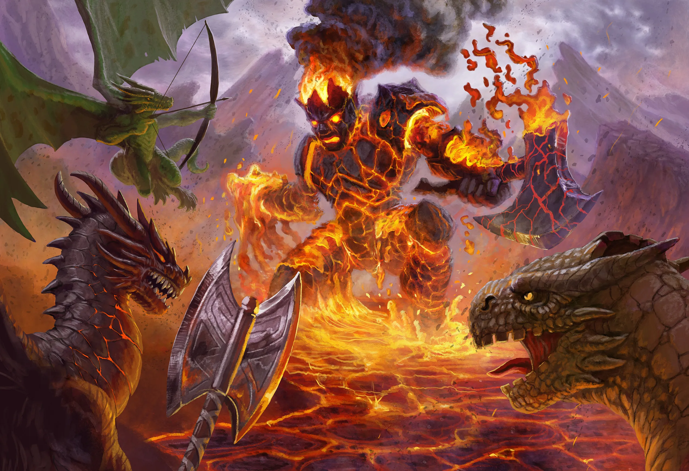
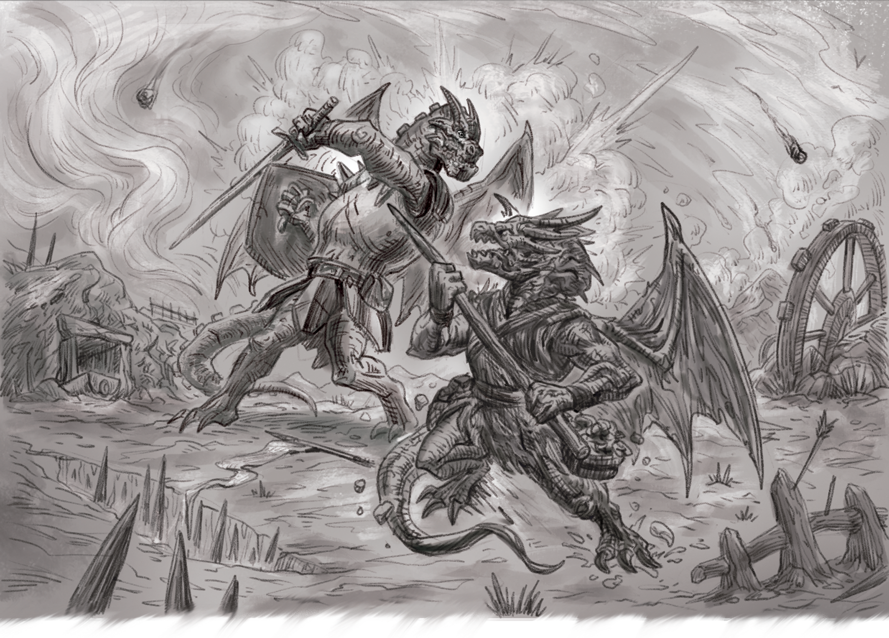

|
很遗憾，这一步终究避无可避。鄙人虽是一位热爱和平的著者，和其他巨龙一样喜欢蜷在窝里读上一本好书，但我也并不排斥实地考察，哪怕要深入那些对粗心者而言危机四伏的奇异未知之地……否则我当初也不会涉足仙境了！然而踏上战场却是另一码事。荒野之中固然奇景与险境并存，但那些暗藏的杀机终归因时因地而起；可在战争沙场上，散播死亡本就是这门行当的核心日常――哪怕人们总把目标粉饰得冠冕堂皇，最终再用历史的滤镜拭去为此付出的累累血债，杀戮依然是其本质所在。 话虽如此，我心里清楚，倘若我想真正理解永光战龙、看清它们的本来面目，就必须深入它们的“自然栖息地”去见识一番。如果这意味着要亲赴一两处战火正酣的交战区，那也只好如此了。你们英勇的著者鼓足勇气、毅然踏入险境，只为尽可能收集关于永光战龙及其形形色色战斗风格、战术与韬略的最精准资料。 我所获知的很大程度上局限于远距离观察――在足够安全的距离外观战动笔，以免这位无畏的著者时刻提心吊胆，生怕一个不留神就命丧黄泉。不必多言，作为一名旁观者，冲突双方显然都不怎么欢迎我。在交战者眼中，凡是不站在自己这一边的人，都可能是危险的变数，随时可能撕下中立的伪装，暴露出敌方暗子的真实面目，只等他们放松警惕便痛下杀手。 于是，我先后接触了每场冲突的交战双方，向他们解释我只是一名观察者与研究者，绝非参战人员。然而每当我说出“观察者”一词，总有不少人听成“间谍”。唉！我至少得打消他们的顾虑，免得他们不把精力放在真正想要消灭他们的敌人身上，反倒分出大批人手来把我射下来。好在历经几番波折与弯路之后，我总算达成了这一目标。 随后映入我眼帘的是一场惨烈至极的厮杀――尽管我们巨龙身为立于食物链顶端的顶级掠食者本已司空见惯，但那副景象依然震撼了你们坚毅的著者。我便不在此处赘述那些血腥画面了。 况且，那些画面本就不是重点：我成功在近距离观察到了身处“自然栖息地”的战龙所施展的种种技艺与能力，并借此进一步完善了我的研究。请容我在此分享一则来自沙场的见闻。 黄金丘陵之战在远离鄙人舒适巢穴的某片土地上，有一带连绵起伏的丘陵位于两国交界的争议边境，当地人称之为“黄金丘陵”。这片丘陵之所以赢得如此绚丽的名字，莫非是因为每当阳光洒落在漫山枝叶间，整片山丘便会泛起迷人的金色光泽？ 我起初觉得这不无可能，但事实证明并非如此。唉，每当贪婪可以解释一切时，艺术与诗意就永远排不上号。事实上，黄金丘陵之下蕴藏着储量惊人的绝佳金属垫窝材料――我说的当然是黄金。对于我们这些灵魂深处尚存几分诗意的人来说，或许只能聊作希冀，盼望当初给这片丘陵命名的人同时想到了这两层含义，玩了个巧妙的双关吧。无论如何，随着归属权争端升级为正面军事冲突，黄金丘陵很快便被鲜血染红。而吸引你们好奇的著者前往此地的，正是其中的巨龙因缘：其中一方在争议领土内秘密修建了一座矿场，另一方唯恐默认割让土地与资源，遂派出大军，在一条永光督军龙的统帅下前去武力夺取矿场。 当然，矿场的守卫者绝不愿拱手让出这棵摇钱树，当即砸下重金，雇佣了一条声名显赫的永光佣兵龙及其麾下佣兵团来捍卫自己的矿权。 尽管督军龙麾下兵力远占优势，且尽是训练有素的精锐士卒，但在佣兵龙指挥下的机敏佣兵们充分利用了矿道狭窄受限的地形，使敌方无法凭人数优势将自己淹没；他们布下层出不穷的陷阱与伏击，干脆利落地击退了来犯之敌。督军龙眼看伤亡不断攀升，断定即便最终能强行夺下矿场也得不偿失。 在组织起井然有序的撤退后，督军龙决定任由佣兵部队龟缩在矿井之中，自己则率军在矿外扎营围困，袭扰一切运送补给或增援的企图，同时修筑起防御工事，以防佣兵们突然从矿道中杀出发动奇袭。 在损失了部分辎重车队后，支持佣兵团的国家察觉到了变故，遂另派一支偏师绕出大圈避开所有斥候，企图与佣兵团里应外合夹击督军龙的大军――待这支奇兵从背后杀到、吸引住敌军注意力后，矿井中的佣兵便会在恰到好处的时机倾巢而出。鉴于佣兵们被困在矿井深处，双方多半是借助魔法来协调夹击时机，不过他们或许也拥有身手足够隐秘的信使，能够神不知鬼不觉地潜过督军龙的营地。 我正是在这段对峙时期听闻了消息，并设法赶到了战场。督军龙的军队并不介意我在旁观战，但那支迂回包抄的侧翼部队因为打算发动奇袭，唯恐我向对方走漏风声，竟认定我风险太大，企图派人暗杀你们无辜的著者。简直奇耻大辱！ 不必多言，我毫发无损地挺过了那次可笑的刺杀。平心而论，倘若他们只舍得派这点微末人手来刺杀我，当初还不如干脆按兵不动，毕竟他们唯一做到的就是挑起了我的怒火。不过，在追寻知识之时我向来不轻易动怒，因此决定不予计较。毕竟，要是我与侧翼部队另起冲突，整场战局恐怕还没等我摸清半点战龙的门道就彻底崩盘了，那我这一趟岂不是白跑了！我确信那条佣兵龙绝不会赞成对我本人发动这种徒劳无功的袭击，这几乎可以肯定只是侧翼军中那些乡野行伍擅自做出的决定。 打发掉那桩恼人的刺杀小插曲后，我终于得以安心观摩战局的推演。不得不说，此行不虚！当督军龙的大军调转阵线迎击侧翼奇兵，而佣兵部队紧接着从矿道中杀出时，督军龙亲自赶赴后阵抵御前后夹击。见此情形，佣兵龙也当即冲上己方阵线最前沿，在三方混战的宏大画卷中央，上演了一场近似巨龙决斗的交锋。 当然，那并非正式的决斗。佣兵龙施展出种种计策，企图要么正面压倒督军龙，要么趁对方分心之际瘫痪其身旁的盟友。然而无论她使出何种招数，督军龙竟都早已备好了反制之策予以化解！看来他们从矿道失利中吸取了教训，研究出了全新的战法。随着激战持续，我在一旁仔细观察，记下了详尽的笔记。 ――永光贤者卡利赞德雷克斯 |
 战龙韬略  战龙韬略 |